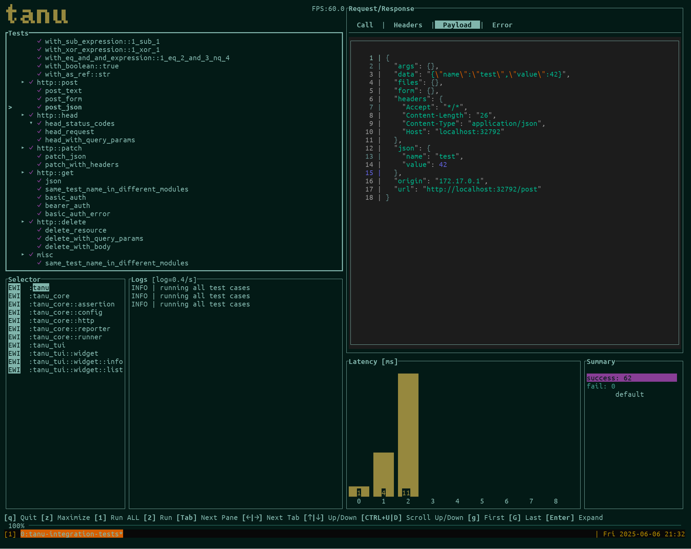

TUI
In TUI mode, you can select and execute a test case and see the result more interactively.

Commands¶
Navigation¶
Tab: Switch between panes→: Navigate to next pane←: Navigate to previous pane↑: Move cursor up↓: Move cursor downEnter: Expand/collapse project, module or test case in the list
Scrolling¶
CTRL+U: Scroll up half the screenCTRL+D: Scroll down half the screeng: Scroll to the top of the screenG: Scroll to the bottom of the screen
Test Operations¶
1: Run all test cases2: Run only the selected test casesSpace: Mark/unmark a test case for selection (use with2to run selected tests)
View Control¶
z: Maximize/minimize the current pane?: Show help panel with available commands
General¶
q: Quit the TUI modeEsc: Cancel current operation or close modal dialogs
Tips¶
- Use keyboard navigation to quickly move between test cases
- Maximize a pane with
zwhen you need to see more details - Mark multiple tests with
Spacebefore executing them with2